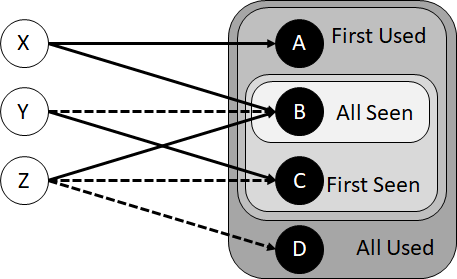

The M5 metrics measure the "integrity" with which resolvers process queries. There are six components in the M5 metric:
The M5 metric is computed by APNIC. The process involves buying Google ads to generate a large number of "impressions" every day. The count varies from day to day, as explained here . Each ad runs a script that causes a script to be run, which resolves DNS names and loads web pages under APNIC control. The URL of the web page is personalized, enabling APNIC to correlate the traffic seen at the DNS resolver and web server with the script run at the client. The source address of the DNS queries received by APNIC identifies the resolver. The country in which the client is located is deduced for the source IP address of the web requests, using an IP address geolocation database.
The statistics provide tabulation "per user" and "per resolver". The tabulation per resolver is straightforward, as each resolver can be identified by its IP address. The computation per user would be straightforward if the Google Ads were a randomized sampling of all Internet users, but that's not the case. Ad distribution is affected by a number of factor, resulting in oversampling of some countries, and undersampling of some others. APNIC compensate against by computing the number of impression per country, based on the IP addresses of the clients, and then computing a "per country" weight defined as the ratio of the number of Internet users in the country divided by the number of impressions in that country.
The first 5 metrics identify and count resolvers by their individual IP addresses. This is not sufficient to assess the concentration of the resolver services, because a single service will often field several individual resolvers. We need to group the individual resolvers into clusters corresponding to separate services. We do that using three methods:
This grouping is a bit arbitrary. There will be cases where different services, for example different ISP, run multiple resolvers at different locations, in different IPv4 or IPv6 subnets. They are counted as many resolvers using the definition above, but would be counted as a single service if we grouped addresses routed via BGP to the same Autonomous System (AS). The problem of course is that if grouping just by subnet is possibly too narrow, grouping by AS is too wide. For example, if an ISP serves several businesses that run their own resolvers, all these resolvers will be lumped in a single in the grouping per AS. Since we have not found the perfect grouping yet, we compute two series of numbers, one with the "subnet" grouping of resolvers, and one with the "AS" grouping.
The web pages used by the script generate a different URL for each user, with a unique domain name and a known TTL. APNIC can observe DNS requests trying to "refresh the cache" for these domain names, and can infer from there the cache refresh strategies used by the resolvers.
The metrics M5.6 and M5.7 measure the concentration of the resolver services by tracking the number of resolvers required to serve 50% or 90% of the number of clients. It turns out that the link between clients and resolvers is a bit fuzzy for two reasons:
This results in several variants of the M5.6 metrics:
We illustrate these computations with an example network of just three clients and four resolvers, each belonging to different services:
The purpose of the example is to explain the differences between what we call "first" and "all", or "used" and "seen". We compute the smallest set of resolvers that are seen the first queries of every client, that are used in the first queries of every client, that are seen in all queries of every client, and that are used in all queries of every client. We see that these are four different sets:
The computation of the metrics M5.6 follows the same logic, but instead of measuring the set that serves "every" client, we look at the minimal sets that are seen or used by 50% or 90% of clients.
The metric M5.7 tries to simplify the approach by considering only the first query to arrive at the test server after a client resolution request. If that request triggered several parallel queries, only the first to arrive ot "initial" query is considered, and the other are ignored.
The complete list of M5 metrics is listed in the following table:
| M5.1 (% alignment of cache time to SOA TTL) | |
|---|---|
| M5.1.1 | % of users using resolvers that re-fetch early |
| M5.1.2 | % of users using resolvers that re-fetch according to TTL |
| M5.1.3 | % of users using indeterminate resolvers |
| M5.1.4 | % of resolvers that re-fetch early |
| M5.1.5 | % of resolvers that re-fetch according to TTL |
| M5.1.6 | % of resolvers where cache time is indeterminate |
| M5.2 (% auto cache refresh) | |
| M5.2.1 | % of users using resolvers that auto-refresh their cache |
| M5.2.2 | % of query load due to cache refresh |
| M5.2.3 | % of resolvers that auto-refresh their cache |
| M5.3 (% EDNS0 DO query rate) | |
| M5.3.1 | % of users using resolvers that set the DO bit in queries |
| M5.3.2 | % of resolvers that set the DO bit in queries |
| M5.4 (%DNSSEC Validation rate) | |
| M5.4.1 | % of users using resolvers that perform DNSSEC validation |
| M5.4.2 | % of resolvers that perform DNSSEC validation |
| M5.5 (Distribution of resolver use) | |
| M5.5 | % of users using one of the top 10,000 resolvers |
| M5.6 (Concentration of the resolver service) | |
| M5.6.1 | Number of first use resolvers seen by 50% of users |
| M5.6.2 | Number of first use resolvers seen by 90% of users |
| M5.6.3 | Number of first use resolvers used by 50% of users |
| M5.6.4 | Number of first use resolvers used by 90% of users |
| M5.6.5 | Number of resolvers seen by 50% of users |
| M5.6.5 | Number of resolvers seen by 90% of users |
| M5.6.7 | Number of resolvers used by 50% of users |
| M5.6.8 | Number of resolvers used by 90% of users |
| M5.7.1 | Number of initial resolvers seen by 50% of users |
| M5.7.2 | Number of initial resolvers seen by 90% of users |
The current values of the metrics is available here.